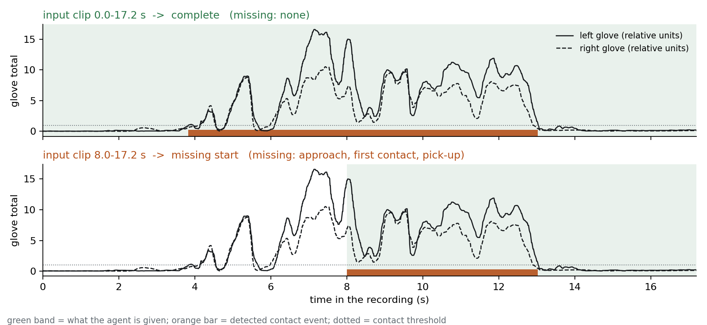
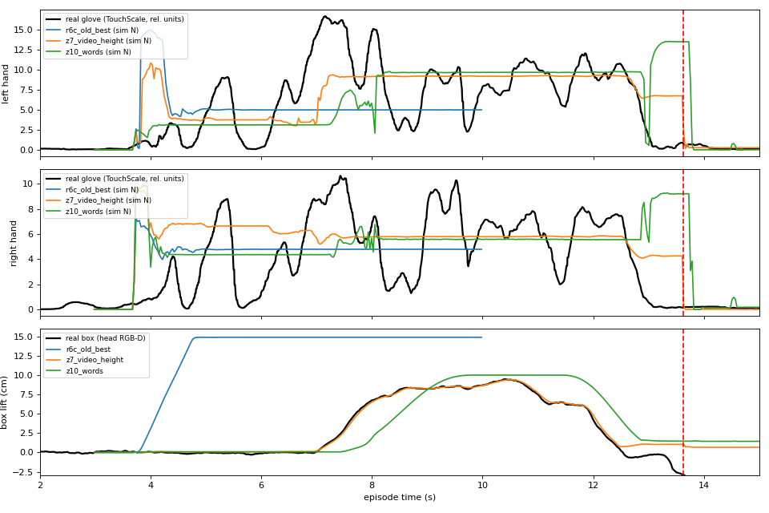
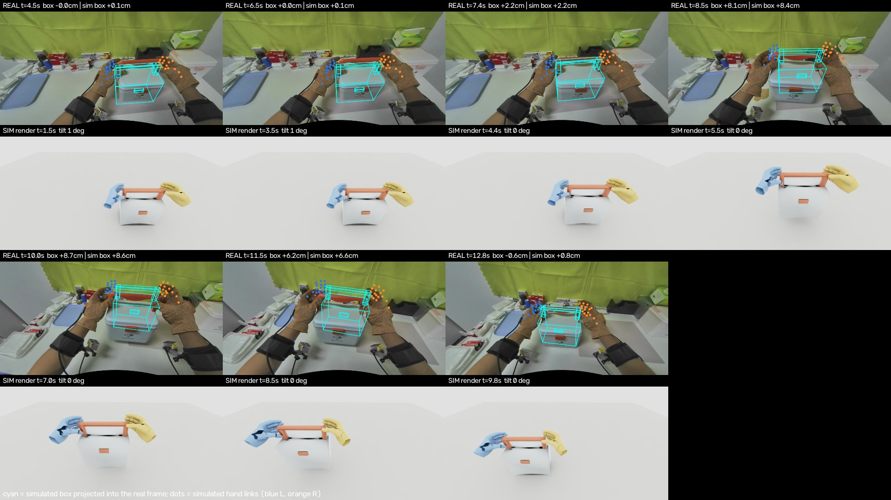
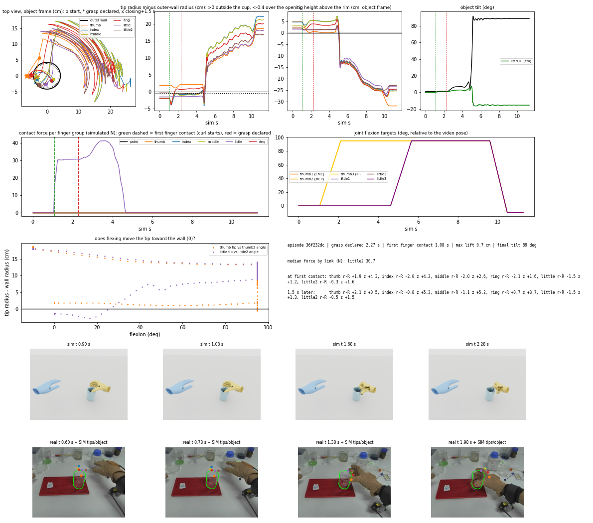

Real2Touch
Code-driven world modeling for promptable physical futures.
A recorded grasp becomes an executable physics program with two articulated hands. The gloves decide whether the grasp is complete, calibrate the simulation, and the code fills in what the camera never saw; the result is rendered back to video, with touch on every finger.
Anonymous authors · under review (double-blind)
Framework click any stage
Video world models show a grasp but do not feel it
- No contact force, no per-finger load, no check that a "lifted" box is actually held.
- A clip that starts mid-grasp hides the approach and the pick-up; nothing says what is missing.
The world state is a program, and touch is the referee
- The gloves decide whether the clip holds a complete grasp (no contact → contact → no contact).
- The scene is rebuilt in Isaac Sim; an agent edits a JSON program until the simulation matches the glove and the measured object height.
- Missing phases are completed by code, then the whole sim is rendered to video.
Futures with forces, taxels and pixels
- Pad pattern vs real glove: .94 cosine on the observed span (both cases).
- A clip cut 4 s into the grasp is completed to a full pick-and-place; sim follows the plan within 0.3 cm.
- Five language prompts → five physically different futures, all executed as asked.
▸ Full abstract
Video world models can imagine what a scene will look like, but not what it will feel like: they produce no contact forces, no per-finger loads, and no guarantee that a "lifted" object is actually supported by the hand. Real2Touch is a code-driven world model: the state of the world is an executable physics program reconstructed from one egocentric human video, and a future is obtained by running a language-promptable motion program in a rigid-body simulator with two articulated MANO hands. A real tactile glove, recorded in sync with the video, is the calibration signal: a critic scores every simulated rollout against the glove (force level, force dynamics, which pads are loaded) and against the object height measured from head-mounted RGB-D, and an agent (an LLM, optionally reading a rendered real-vs-sim comparison sheet) edits the program until simulation and observation agree. Programs are plain JSON passed through a single validator; nothing generated by the agent is executed as code.
1Is the grasp complete?
The agent's first check is read from touch, not from pixels. Per hand, the glove total is median-filtered; contact is above threshold for ≥ 0.15 s, with gaps under 1 s merged (re-grasps). A grasp is complete when the clip shows ≥ 0.3 s without contact on both sides of the main event.

2Real2Sim, calibrated by touch
A person lifts a first-aid box by its handle with both hands, carries it ~30 cm and puts it down. Each round the critic compares the simulated rollout with the real glove (level, dynamics, pad pattern) and the measured box height; the agent changes the program.
| Round | Change made by the agent | Force dynamics | Score | Note |
|---|---|---|---|---|
| r0 | side clamp, nominal lift | .44 | .643 | sim grip 2× too strong |
| 2b | grip 6 N, three fingers | .00 | .700 | pad pattern .96 |
| r6c | observed handle grasp, thumb-only regulation | .08 | .709 | lifts at once (3 s early) |
| z7 | measured height profile + grip–load coupling | .28 | .777 | bitwise reproducible |
| v2c | VLM round 2 (language program + 30 cm carry) | .59 | .835 | fragile: drops the box after a small gain change |
| v3b | VLM round 3 (+ friction 1.0) | .34 | .764 | survives the perturbation (.752) |


3Code completes the missing grasp
For the clip that starts 4 s into the grasp, the observed part is reproduced under the program's constraints and the code plans what the clip never showed: wait on the table, lift vertically, then move sideways (lifting and moving at once let the left hand slip in earlier attempts). The same simulation then runs to the release.
Compared with what the human really did (the cut-away part of the same recording): the synthetic pick-up takes 3.0 s (wait 2 s, lift, side move) where the person needed 0.98 s with a diagonal lift; height-profile shape RMSE 2.77 cm; contact-to-clip time 4.0 s vs 4.26 s. The completion is physically feasible, not a reconstruction of the human's motion, and the 2 s wait on the table cannot be checked against anything observed.
4Sim2Real: rendering the simulation as video
The full simulated grasp is rendered along the real head-camera path as depth (with the static real background behind it) plus a hand and arm mask, and a video model generates the whole frame from the first real image. No real pixels are pasted in. Two generators: Wan2.2-Fun-5B-Control and RoboRender (Wan2.1-1.3B + its LoRA; trained on robot arms, so our hands are out of distribution).
| Generator · control | Uses future info? | PSNR ↑ | LPIPS ↓ |
|---|---|---|---|
| Wan · first frame only (static) | no | 19.6 | .280 |
| Wan · first frame + text | no | 18.4 | .358 |
| Wan · sim edges | no | 17.5 | .446 |
| Wan · sim depth | no | 18.5 | .330 |
| Wan · composite edges | no | 14.9 | .460 |
| RoboRender · sim depth + hand mask | no | 17.8 | .343 |
| Wan · real future depth (oracle) | yes | 20.8 | .206 |
| RoboRender · real future depth (oracle) | yes | 21.6 | .222 |
Two-second clips (lift, carry), means over both. A static first frame scores well on PSNR because the camera barely moves; it shows no motion. Sim depth gives the right hand and box motion (handle error 17 px) but trails the oracle, which sees the real future geometry.
Long videos: anchoring to observed frames
Chaining 2-second chunks over a full 11–12 s grasp drifts as the background is re-imagined. Every chunk that starts on an observed frame now starts from that real frame instead of the previous chunk's last generated frame.
| Full-length video (11–12 s) | Generator | PSNR ↑ chained | PSNR ↑ anchored |
|---|---|---|---|
| Replayed grasp (complete clip) | Wan | 14.8 | 17.1 |
| Replayed grasp (complete clip) | RoboRender | 15.3 | 16.8 |
| Code-completed grasp (partial clip) | Wan | 12.9 | 16.4 |
| Code-completed grasp (partial clip) | RoboRender | 15.4 | 16.1 |
One episode. LPIPS of the replayed Wan video falls from .585 to .435. Anchoring leaves a visible jump at each anchor (frame difference at a seam is 8× the within-chunk level); cross-fading the seams is not done yet.
TouchRender: a renderer trained on our own episodes
RoboRender has only seen robot arms. TouchRender is a control LoRA (rank 64) on Wan2.1-Fun-1.3B-Control, trained on 903 clips cut from 53 real episodes: the sensor depth video and the first real frame go in, the real video is the target. Nine episodes are held out.
| Clip · control | Model | PSNR ↑ | LPIPS ↓ |
|---|---|---|---|
| 9 held-out episodes, 1.4 s · real sensor depth | static first frame | 26.8 | .098 |
| base Wan-Fun, no training | 26.2 | .078 | |
| TouchRender, 250 steps | 27.6 | .077 | |
| Replayed grasp, 1.4 s · simulated depth | static first frame | 16.6 | .458 |
| TouchRender, 250 steps | 21.5 | .298 | |
| Code-completed grasp · simulated depth | static first frame | 64.5 | .407 |
| TouchRender, 250 steps | 7.3 | 1.11 |
The held-out clips barely move, so a static first frame already scores 26.8 and the 250-step model adds little over the untrained base on real depth (PSNR +1.4, LPIPS equal): that row is a sanity check, not a result. Simulated depth is the case that matters. It beats the static frame on the replayed grasp and destroys the code-completed clip, where nothing moves and the static frame is almost exact (cause not yet diagnosed).
5Promptable physical futures
The calibrated scene executes new instructions as physically different outcomes. Five prompts on the handle grasp were turned into validated programs and all executed as asked: lift 15.2 cm · slow lift 5.1 cm · lift to 24.3 cm and release · carry 21.1 cm and set down · shake between 15 and 18.5 cm.
6Self-improvement on masked futures
Every recorded episode is a free exam: cut it early, hide the rest, and ask the system to predict the touch that follows. A proposer reads the visible frames and glove prefix and writes a phase program (which hand touches when, with which grip, and when the object is lifted, pressed or set down); code turns the program into glove signals; a frozen evaluator scores them against the hidden future. An improver may then change the program-to-touch code using training episodes only.
| Held-out test · score Q ↑ | 2 frames seen | grasp just started | mid-contact | all |
|---|---|---|---|---|
| Persistence (repeat the prefix) | .000 | .266 | .318 | .195 |
| Shuffled (another episode's future) | .158 | .264 | .308 | .243 |
| Prior (training-set average future) | .276 | .351 | .415 | .347 |
| Phase program, round 0 | .360 | .408 | .457 | .408 |
| Phase program, round 1 (after one improver step) | .365 | .428 | .502 | .431 |
27 tasks from 9 episodes never used for fitting; 62 episodes and 186 tasks in total. Q averages five terms: contact overlap, onset time, release time, force shape and which finger pads are loaded (1.0 = the real future). Round 1 beats the prior by .084 (bootstrap 95 % interval .036–.138) and round 0 by .023 (.013–.033, better on 24 of 27 tasks). The improver step blended each grip's pad template with the pads loaded in the visible prefix. Force shape is still the weakest term (.14): a program holds a flat grip level. One proposer sample per task.
7What does not work yet
- One episode end to end. A glass beaker gripped from above was not lifted in 20 Isaac runs: WiLoR's centimetre error gives the grasp type, not contact points on a 4.3 cm rim. A laptop lifted from below was placed correctly (height RMSE 0.4 cm) but the thumbs never touched.
- Relative touch. The glove has no force calibration, so force level is compared in relative terms; mass and friction that best match touch are inferred, not measured.
- Completion ≠ the human. Code completion is physically valid but slower and more staged than the person (3.0 s vs 0.98 s pick-up).
- Rendering. Long generated videos drift in background and appearance; anchoring helps but leaves seams. TouchRender is good with real depth and unproven with simulated depth, which is what the pipeline feeds it.
- Masked futures. The self-improvement loop predicts touch timing and pads, not yet force shape, and has no physics simulator in the loop.
Next experiments
- TouchRender on verified weights. Confirm the corrupted-base explanation, then retrain from checksum-verified base weights with a harder held-out test (clips where the hands move) and static-frame and base-model baselines in every table.
- Close the depth gap. Retrain with controls degraded to look like simulator depth, then render full-length grasps with anchoring and cross-faded seams.
- Loop, round 2. Give programs a force shape (ramps and event peaks fitted on training episodes), write lessons from training failures into the proposer, and pick among several sampled programs with a verifier.
- One or two frames to video and touch. Run a held-out episode end to end: frames → program → simulation → TouchRender video with the 880-taxel touch signal, under different prompts.

·Code and citation
The code (every stage of the framework above, with its stage-by-stage specification) will be released after review. Datasets, model weights and MANO files will not be redistributed; they are available from their providers under their licenses.
@misc{real2touch2026,
title = {Real2Touch: Code-Driven World Modeling for Promptable Physical Futures},
author = {Anonymous},
year = {2026},
note = {Under review}
}